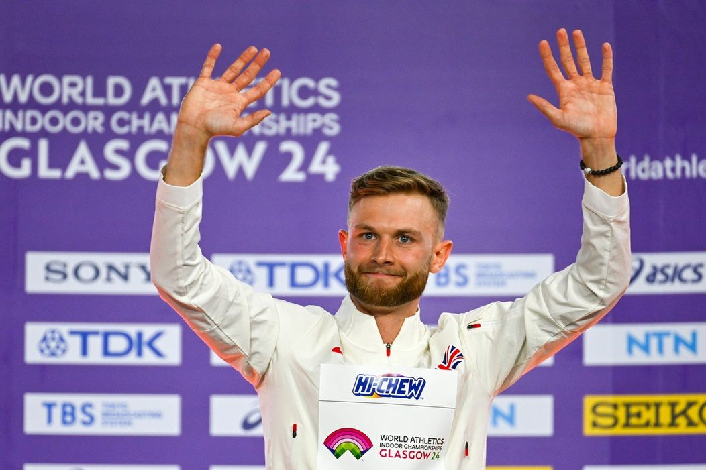

영국 조시 커, 런던서 1마일 세계기록 도전 성공
영국 육상 선수 조시 커가 런던에서 열린 대회에서 1마일 세계기록을 깨는 데 성공했다. 계획대로 이뤄 낸 역주에 관중이 환호했다.
유종한 기자 · 2026.07.22
橋국제

조시 커가 런던 대회에서 1마일 세계기록을 세우겠다는 계획을 성공시켰다고 외신들이 전했다. 중장거리 육상의 새 이정표로 기록됐다.
광고 문의 · 300×2501마일(약 1.6㎞)은 육상 중거리의 상징적 종목으로, 세계기록 경신은 오랜 훈련과 완벽한 레이스 운영이 맞아떨어져야 가능하다. 페이스 조절과 마지막 스퍼트의 조합이 관건이다.
기록 경신은 개인의 성취일 뿐 아니라 종목 전체의 수준을 끌어올리는 계기가 된다. 후배 선수들에게 새로운 목표를 제시하고, 관중에게는 인간 한계에 대한 도전의 감동을 준다.
육상 기록은 장비·트랙·기상 조건과 함께 선수의 컨디션이 절묘하게 맞물릴 때 나온다. 이번 성공은 그런 조건을 스스로 만들어 낸 준비와 집중의 결과로 평가된다.
華橋時報는 한계를 향해 달리는 선수들의 도전을 응원한다. 국적과 종목을 떠나, 자신을 넘어서려는 순간의 몰입은 보는 이 모두에게 영감을 준다.
출처·참고 (사실 확인용 — 본문은 직접 재작성)
· BBC
· BBC